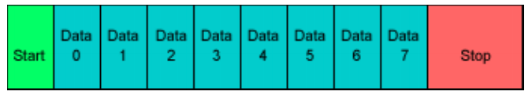

Week 9 - UART, SPI, I2C
Protocol
Each character is sent as
- a logic low start bit
- a configurable number of data bits (usually 7 or 8, sometimes 5)
- an optional parity bit
- one or more logic high stop bits
A particular bit timing (”baud”)
- “9600-N-8-1” →
- “9600-8-N-1” →

Variation
UART is actually a generic term that includes a large number of different devices/standards.
- RS-232 is a standard that specifies
- “electrical characteristics and timing of signals, the meaning of signals, and the physical size and pin out of connectors.
Signals (only most common)
RXD - The signal receiving the data. This will be an input and is usually connected to the TXD line of the downstream device.
TXD - The signal transmitting the data. This will be an output and is usually connected to the RXD line of the downstream device.
RTS#: (Ready to Send) signal to indicate that the device is ready to receive data. This will be an output and is usually connected to the CTS# line of the downstream device.
CTS#: (Clear to Send) signal to identify that it is OK to transmit data to the upstream device. This will be an input and is usually connected to the RTS# line of the upstream device.
Cable and connector
DTE: data terminating equipment (usually terminal)
DCE: data circuit-terminating equipment (modem)
D-sub connector (DB 9 for UART)
- ground and noise issues


Wiring a DTE device to a DCE device for communication is easy.
- The pins are a one-to-one connection, meaning all wires go from pin x to pin x.
- A straight through cable is commonly used for this application.
In contrast, wiring two DTE devices together requires crossing the transmit and receive wires.
- This cable is known as a null modem or crossover cable.

RS-232

letter “J” ASCII code 전송
위: DTE - DCE
아래: DCE - DCE
Discussion
How fast can we run a UART?
What are the limitations?
Why do we need start/stop bits?
How many data bits can be sent?
- 9600-8-N-1 is ok. Is 9600-8192-N-1 ok too?
SPI basics
A communication protocol using 4 wires
- Also known as a 4 wire bus
Used to communicate across small distance
Multiple Slaves, Single Master
Synchronized ↔︎ UART (Asynchronous)

Always Full Duplex
- Communicating in two directions at the same time
- Transmission need not be meaningful
Multiple Mbps transmission speed
Transfer data in 4 to 16 bit characters
Multiple slaves
- Daisy-chaining possible
SPI protocols
Wires
- Master Out Slave In (MOSI): carries data out of Master to Slave
- Master In Slave Out (MISO): carries data from Slave to Master
- Both signals happen for every transmission
- System Clock (SCLK): Master produces clock to synchronize data transfer
- /SS (Slave Select 1 … N): Unique line to select a slave.
Shift registers shift in and out data: Master shifts out data to Slave, and shift in data from Slave.

Slave selection
Dedicated Slave selection vs. Daisy chaining
- Master Set Slave Selection low with /SS_N signals
- Daisy chaining: MOSI - (DIN-DOUT) - (DIN-DOUT) …

이런 형상을 Daisy chaining이라고 부름
Pros and Cons
Pros
Fast for point-to-point connections
easily allow streaming/constant data inflow
no addressing/simple to implementation
Everyone supports it.
Cons
SS makes multiple slaves very complicated
No acknowledgement ability
No inherent arbitration
No flow control
What is I2C (or I2C)?
Inter-integrated circuits
Pronounced “Eye-Squared-See”
Two-wire seal bus protocol
Invented by Philips in the early 1980’s
- That division now spun-off into NXP
- Originally developed for the internal communication of TV sets
It becomes popular for embedded systems and PCs for sensors peripheral ICs, and so on.
Specifications
Two-wire seal protocol with “addressing” capability
- Multi-master / Multi-slave
- SDA (data), SCL (clock) lines
- Open-collector: enable interface between different voltage levels
Speeds up to 3.4Mbit/s
Clock
Different from the conventional clocks
Normally high (kept high by the pull-up)
Pulsed by the master during data transmission (whether the master is transmitter or receiver)
Slave device can hold clock low if it needs more time
- 우회적인 protocol 구현 가능
Timing diagram
Transmitter/Receiver \(\approx\) Master/Slave
- Master always initiate transactions, and slave responds
- (read) transmitter is slave, (write) transmitter is master
Transmitter sets data on the SDA line, Receiver acknowledges.
- Start condition - Address/Data - Acknowledgement - Stop condition

Start/stop conditions
Start condition
Master pulls SDA down while SCL is high.
Normally SDA changes only while SCL is low.

Stop condition
Master pulls SDA high while SCL is high.
Also used to “abort” transaction.

Address/data transmission
Address and data are always sampled on rising edge of clock.
7 bits address - 8th bit for read/write indication: high/low → R/W - 8 bits data
Transmission continues with subsequent bytes until master creates stop condition.